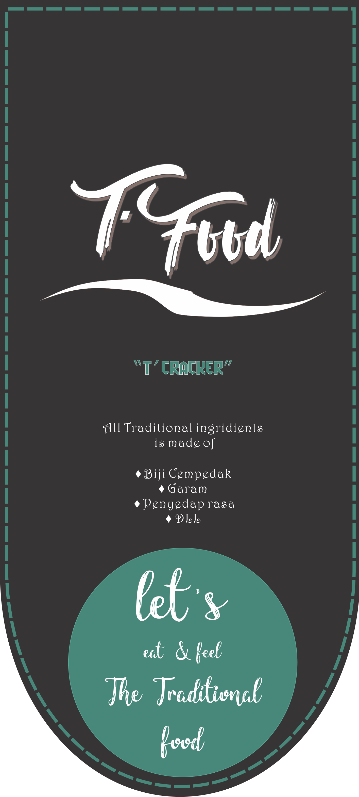

Product
T'Cracker
Bahan
1. Biji cempedak 1kg
2. Tepung sagu 1kg
3. Bawang putih 1ons
4. Garam
5. Bumbu penyedap
6. Air hangat
Pengolahan
1. Bersihkan biji cempedak.
2. Rebus biji cempedak sampai matang, jika sudah matang, angkat dan tiriskan biji cempedak, kupas kulit biji cempedak lalu haluskan dengan menggunakan blender.
3. Campurkan biji cempedak yang sudah halus tadi dengan bahan-bahan diatas seperti tepung sagu, bawang putih, dan garam, lalu aduk sampai merata.
4. Setelah itu giling adonan hingga pipih sekitar 0,5 cm. Setelah menjadi pipih, buatlah adonan bulat memanjang, panjangnya per satu jengkal.
5. Kukus selama 30 menit.
6. Setelah dikukus, angkat dan dinginkan untuk dipotong menjadi tipis-tipis.
7. Jemur kerupuk biji cempedak tersebut sampai kering.
8. Bila sudah benar-benar kering, kerupuk biji cempedak siap digoreng dengan minyak panas.
9. Setelah digoreng, minyak ditiriskan hingga benar-benar kering.
10. Kita dapat menambahkan berbagai varian perasa tergantung rasa yang akan diolah.
